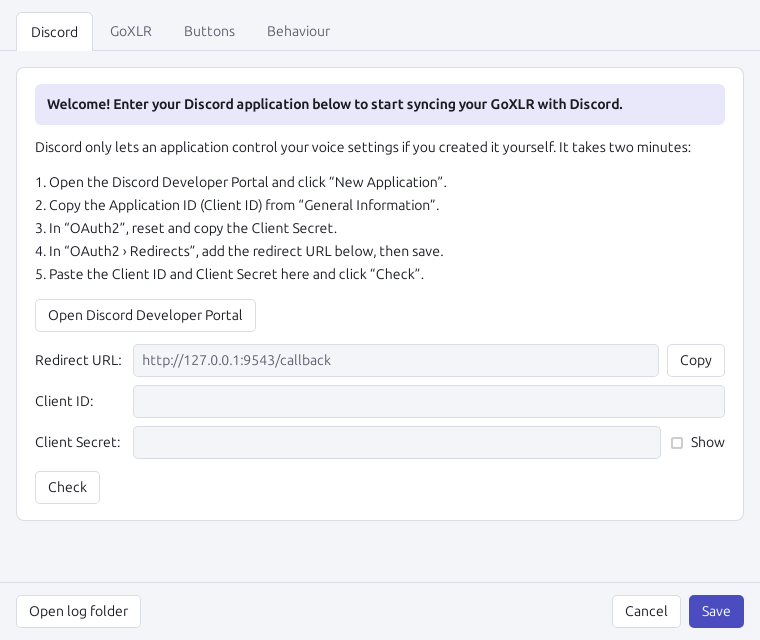
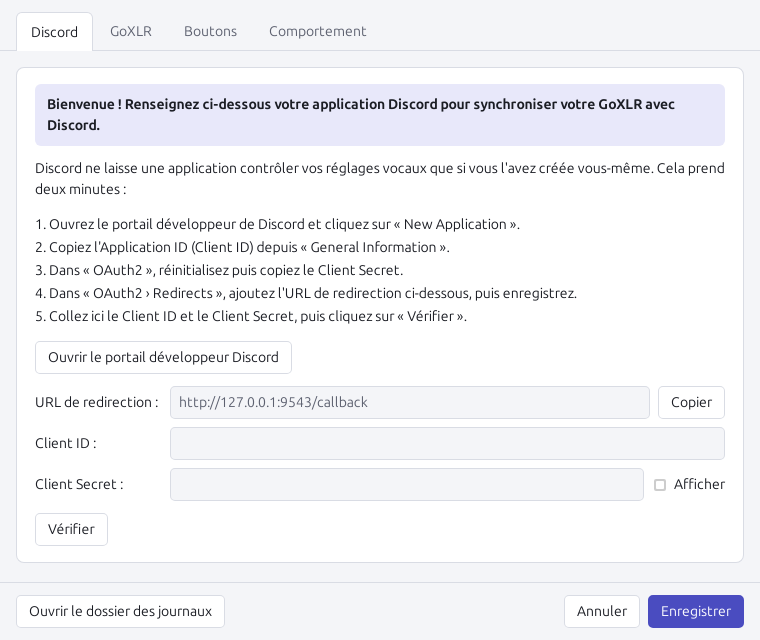

One press on the GoXLR, Discord followsUn appui sur le GoXLR, Discord suit
Cough button → Discord muteBouton Cough → micro Discord coupé
Your friends stop hearing you the moment you press it, and hear you again when you release it.Tes amis ne t'entendent plus dès que tu appuies, et t'entendent de nouveau quand tu relâches.
Chat fader → Discord deafenFader Chat → sourdine Discord
Mute the fader that carries Discord and you are deafened in Discord too, so everyone sees you are away.Coupe le fader qui porte Discord et tu es aussi en sourdine dans Discord : tout le monde voit que tu n'écoutes plus.
Two-way syncSynchronisation dans les deux sens
Optional: mute yourself in Discord and the GoXLR button lights up to match.En option : coupe ton micro dans Discord et le bouton du GoXLR s'allume aussi.
Extra buttonsBoutons supplémentaires
Turn an unused sampler or effect button into “toggle mute”, “toggle deafen” or “leave the voice channel”.Transforme un bouton de sampler ou d'effet inutilisé en « couper le micro », « sourdine » ou « quitter le salon vocal ».
Stream friendlyPensé pour le stream
Muting a channel only “to Stream” does not mute you in Discord. You choose which GoXLR mute modes count.Couper un canal seulement « pour le stream » ne te coupe pas dans Discord. Tu choisis quels modes de mute du GoXLR comptent.
Light and automaticLéger et automatique
A 3 MB app that starts with your computer, reconnects on its own and offers updates when they come out.Une application de 3 Mo qui démarre avec l'ordinateur, se reconnecte toute seule et propose les mises à jour quand elles sortent.
The tray icon shows where you standL'icône près de l'horloge te dit où tu en es
Set up in about five minutesPrêt en cinq minutes environ
You only do this once. After that, the app starts with your computer and you can forget about it.À faire une seule fois. Ensuite l'application démarre avec l'ordinateur et tu peux l'oublier.
Check you have the two programs it talks toVérifie que tu as les deux logiciels avec lesquels il dialogue
- GoXLR Utility, the free community app for the GoXLR (download it here). The official TC-Helicon app has no connection for other programs, so it cannot be used.GoXLR Utility, l'application communautaire gratuite pour le GoXLR (à télécharger ici). L'application officielle de TC-Helicon n'offre pas de connexion aux autres logiciels, elle ne convient donc pas.
- The Discord desktop app (Discord in a web browser cannot be controlled).L'application Discord pour ordinateur (Discord dans un navigateur ne peut pas être piloté).
Download and installTélécharge et installe
Click Download for Windows, open GoXLR_Setup.exe and follow the installer (Next, Install, Finish).Clique sur Télécharger pour Windows, ouvre GoXLR_Setup.exe et suis l'installation (Suivant, Installer, Terminer).
If Windows shows “Windows protected your PC”, click More info then Run anyway. It appears because this free project has no paid code signing certificate.Si Windows affiche « Windows a protégé votre ordinateur », clique sur Informations complémentaires puis Exécuter quand même. Ce message vient du fait que ce projet gratuit n'a pas de certificat de signature payant.
Create your Discord applicationCrée ton application Discord
Discord only lets a program change your mute if you created a small “application” for it yourself. It is free and the settings window guides you:Discord ne laisse un logiciel couper ton micro que si tu lui as créé toi-même une petite « application ». C'est gratuit et la fenêtre des réglages te guide :
- Click Open Discord Developer Portal, log in and click New Application (any name).Clique sur Ouvrir le portail développeur Discord, connecte-toi et clique sur New Application (n'importe quel nom).
- Copy the Application ID into “Client ID”.Copie l'Application ID dans « Client ID ».
- In OAuth2, click Reset Secret and copy it into “Client Secret”.Dans OAuth2, clique sur Reset Secret et copie-le dans « Client Secret ».
- Still in OAuth2, under Redirects, paste
http://127.0.0.1:9543/callback(the Copy button does it for you) and save.Toujours dans OAuth2, dans Redirects, collehttp://127.0.0.1:9543/callback(le bouton Copier le fait pour toi) et enregistre. - Click Check, then Save.Clique sur Vérifier, puis Enregistrer.


Approve in Discord, and you are doneAccepte dans Discord, et c'est fini
Discord shows a window asking to authorize your application: click Authorize. The tray icon turns green. Press the Cough button to try it.Discord affiche une fenêtre qui demande d'autoriser ton application : clique sur Autoriser. L'icône devient verte. Appuie sur le bouton Cough pour essayer.
QuestionsQuestions
Is it free? Is it safe?C'est gratuit ? C'est sûr ?
Yes, it is free and open source (MIT licence): anyone can read the code on GitHub. It collects no data and has no telemetry. It only talks to GoXLR Utility and Discord on your own computer, to Discord's servers when you authorize it, and to GitHub to check for updates (you can turn that off).Oui, c'est gratuit et open source (licence MIT) : tout le monde peut lire le code sur GitHub. Aucune donnée n'est collectée. L'application ne parle qu'à GoXLR Utility et à Discord sur ton ordinateur, aux serveurs de Discord quand tu l'autorises, et à GitHub pour chercher les mises à jour (désactivable).
Your Discord secret and tokens stay on your computer, encrypted by Windows.Ton secret et tes jetons Discord restent sur ton ordinateur, chiffrés par Windows.
Why do I need my own Discord application?Pourquoi dois-je créer ma propre application Discord ?
Discord reserves voice control to applications it has approved, or to the person who created the application. Creating your own takes two minutes and means nobody else is involved: you stay in control and can revoke it at any time in Discord (User Settings › Authorized Apps).Discord réserve le contrôle de la voix aux applications qu'il a validées, ou à la personne qui a créé l'application. En créer une prend deux minutes et personne d'autre n'intervient : tu gardes la main et tu peux la révoquer quand tu veux dans Discord (Paramètres › Applications autorisées).
I mute Chat “to Stream” only, will Discord deafen me?Je coupe Chat seulement « pour le stream », Discord va me mettre en sourdine ?
No. By default the Chat fader only deafens you when it is muted to everything or to your headphones, and the Cough button only mutes you when it mutes everything or Voice Chat. You can change this in Settings › GoXLR.Non. Par défaut, le fader Chat ne te met en sourdine que s'il coupe tout ou ton casque, et le bouton Cough ne coupe ton micro que s'il coupe tout ou le chat vocal. Tu peux changer ça dans Réglages › GoXLR.
How do updates work?Comment se font les mises à jour ?
Once a day the app checks for a new version. If there is one, a notification tells you; choose Install update in the tray menu. The update is checked, installed in a few seconds and the app starts again, with your settings kept. Nothing is installed without your OK, and a pending update waits until you leave your voice call.Une fois par jour, l'application regarde s'il y a une nouvelle version. Si oui, une notification te prévient ; choisis Installer la mise à jour dans le menu de l'icône. La mise à jour est vérifiée, installée en quelques secondes et l'application redémarre, avec tes réglages. Rien n'est installé sans ton accord, et l'annonce attend que tu aies quitté ton appel vocal.
It does not work, what can I check?Ça ne marche pas, que vérifier ?
Hover over or left-click the tray icon to see what it is waiting for. Orange means GoXLR Utility or the Discord desktop app is not running. Grey means the settings need your Discord application, or Discord needs your approval again (menu › Authorize Discord again).Survole ou clique sur l'icône pour voir ce qu'elle attend. Orange : GoXLR Utility ou l'application Discord n'est pas lancé. Gris : il manque ton application Discord dans les réglages, ou Discord doit de nouveau être autorisé (menu › Autoriser Discord à nouveau).
Still stuck? Report the problem on GitHub and attach the log (menu › Open log).Toujours bloqué ? Signale le problème sur GitHub en joignant le journal (menu › Ouvrir le journal).
How do I uninstall it?Comment le désinstaller ?
Windows Settings › Apps › Installed apps › GoXLR Discord Sync › Uninstall. Tick “Delete the application data” to remove your settings too.Paramètres Windows › Applications › Applications installées › GoXLR Discord Sync › Désinstaller. Coche « Supprimer les données de l'application » pour effacer aussi tes réglages.
Like it? Give it a starÇa te plaît ? Mets une étoile
A star on GitHub costs nothing and helps other GoXLR owners find the project. You need a free GitHub account; click the ★ Star button at the top of the project page.Une étoile sur GitHub ne coûte rien et aide d'autres possesseurs de GoXLR à trouver le projet. Il faut un compte GitHub gratuit ; clique sur le bouton ★ Star en haut de la page du projet.
Star on GitHubMettre une étoile sur GitHub